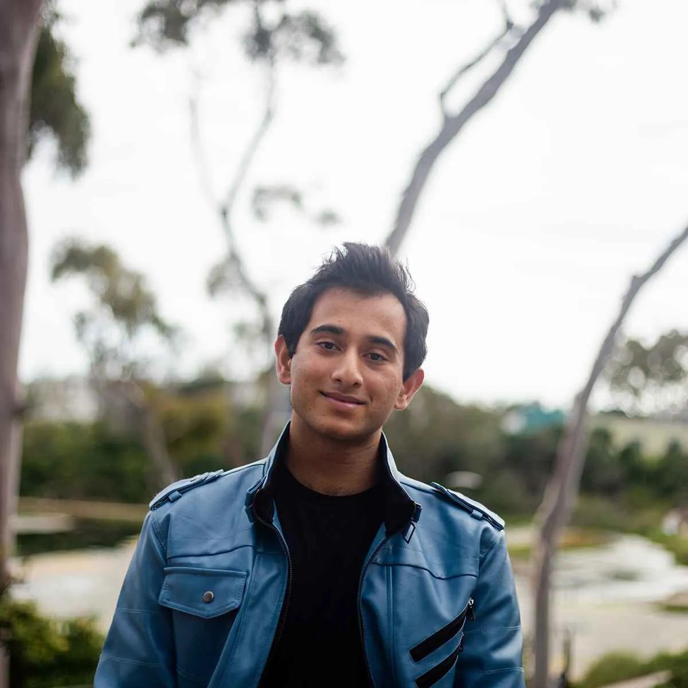
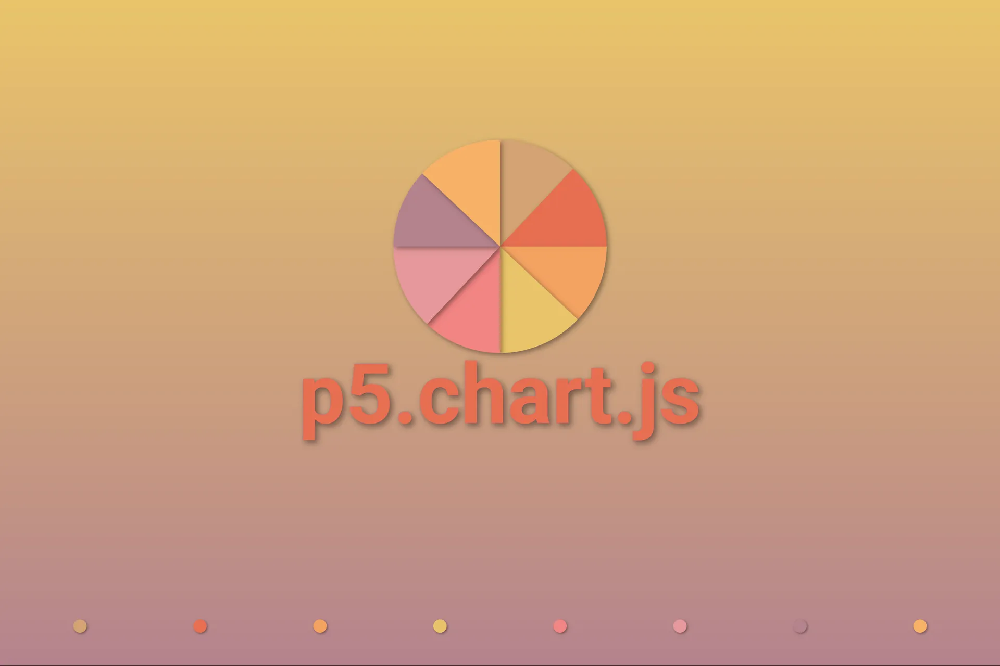

Gilgamesh: The Opera
Assistant Projection Designer
Projection Design Work
A few highlights. See the full set on the Projection page.
Storyteller, designer, and developer blending art and technology to build expressive systems including creativity support tools, lighting & projections, and interactive visuals.




I'm a visual storyteller passionate about building systems that blend art, design, and computation, and I graduated with my B.S. in Statistics and Data Science, B.A. in Theater (Design), and minor in Language and Speech Technologies from UC Santa Barbara. My work spans theatrical lighting and projection design, interactive visualizations, data-driven tools, tutoring data science courses, and research on computational psycholinguistics. Most recently, I served as the assistant projection designer for Trollfest in Juneau, worked as the technical director/lighting and projections designer for UCSB Dance Company on their 2025 European tour across Spain, Poland, North Macedonia, and Bulgaria, presented research on exemplar models of language change at UC San Diego, and earned statewide journalism awards for Best Infographic, Best Interactive Graphic and Best Multimedia Package from the California College Media Association.
I am currently focused on developing creativity support systems that assist with ideation and multimodal storytelling and can bridge the gap between computational inference and human understanding.